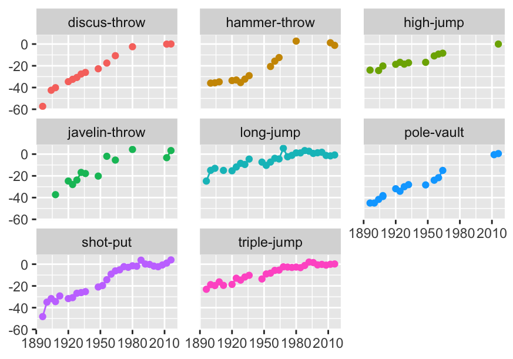
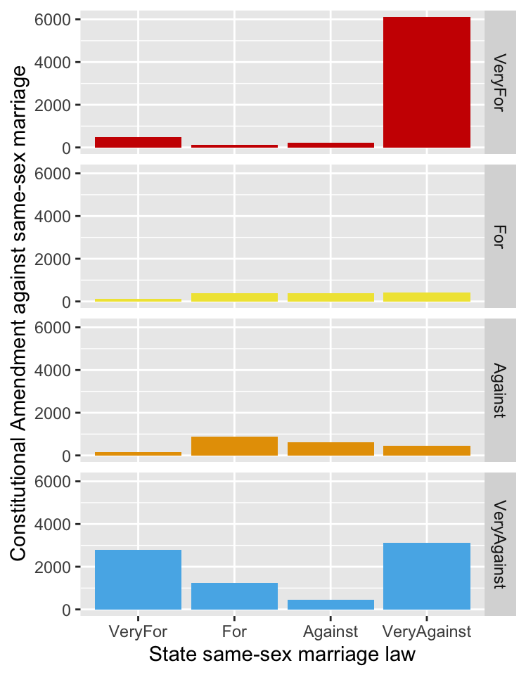
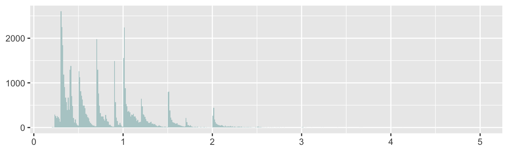
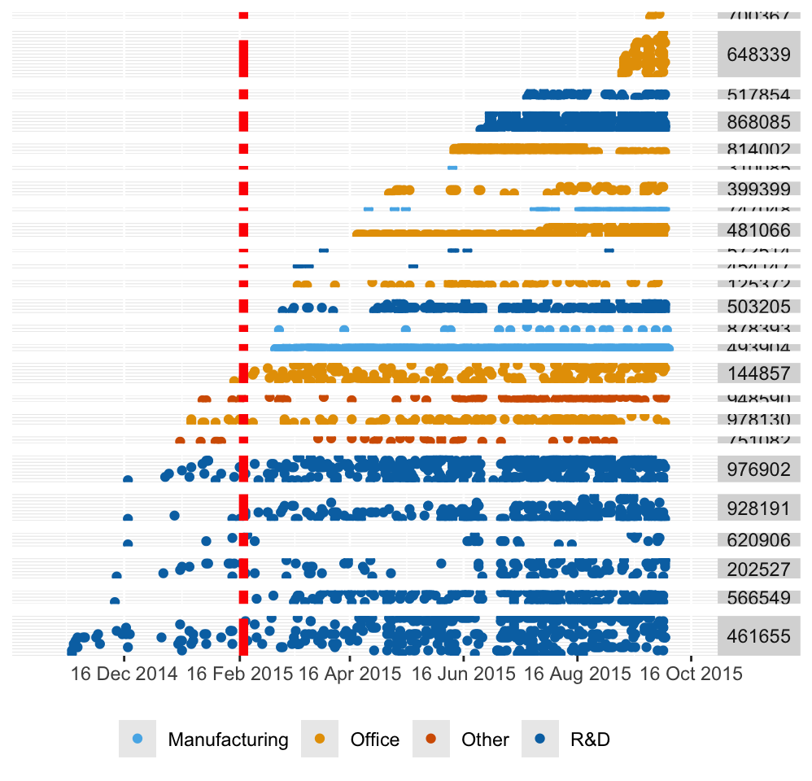
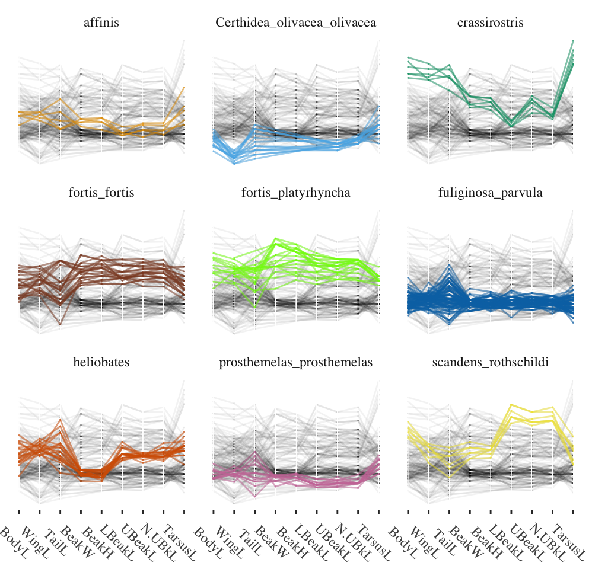
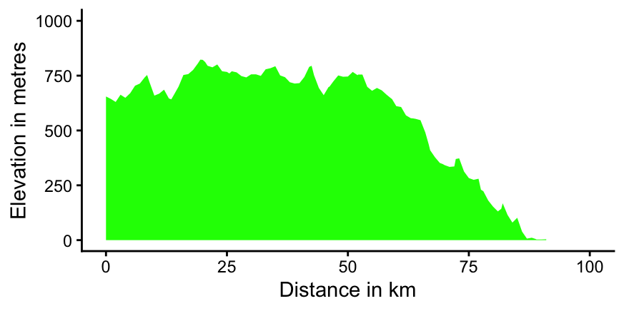
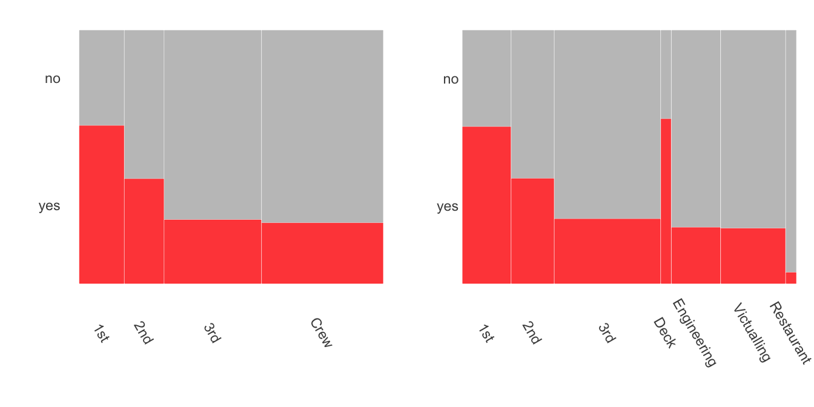

27.3 The provenance of datasets used in the book
Datasets may be made available as part of a public service, as many governmental organisations now do. They may be provided as supplementary material to research publications, and some journals require that of authors, even if not all authors satisfy the requirements. They may be analysed as illustrations in articles or textbooks and made accessible on webpages. They may be included in software packages. Detailed background information may or may not be provided. Even with extensive details of how data were collected and how variables were defined, there may still be more to be found out. The following examples discuss datasets used in the book to illustrate the issues and to show that it can be helpful to dig deeper.
27.3.1 Gapminder (Chapter 2)
The Gapminder website (Rosling (2013)) provides substantial amounts of data on countries around the world and gives extensive information on the sources of the data and on what data cleaning has been carried out. Standards of data collection vary by country and over time and this has to be kept in mind in any comparison of countries.
27.3.2 Movies (Chapter 3)
The movies dataset was downloaded from the IMDb website (IMDb (2022)). Two of the files, one with runtimes and one with average viewer ratings, were merged. Only the categories “movie” and “short” were kept and only items which had over 100 ratings. As of the beginning of July 2022 these measures reduced the total number of items in the dataset from just over 9 million to just under 125,000. The database is continually updated with new films, more user ratings, and amended information.
IMDb report the genres classifying films using a maximum of three descriptors. The information is given in a single column with the descriptors in alphabetic order, separated by commas. There is no standard classification of films by genre, so other sources may use other classification schemes. (And you may personally disagree with some of the individual classifications too.)
Movie lengths show two uncommon features. There are a few extraordinarily long films that are not errors, but actual films, and there is heaping on rounded numbers of minutes, particularly at 90 minutes, the old standard length. Checking running times of the films on their imdb.com technical specs webpages also reveals that some films have been released in more than one version with different lengths.
Summary data on ratings of individual films by user age and sex are reported for the 70% or so of users who provide this information. How truthful those users are in their self-description is not known (and it is not known how truthful or reliable they are in their ratings either).
27.3.3 Democratic Convention 1912 (Chapter 4)
Initial analyses in Chapter 4 of the 46 ballots that took place at the 1912 Democratic Convention plotted results by ballot number. Checking the official report of the Convention more closely supplied opening and closing times for each session over the five days. These were used to produce estimates of when the ballots took place and to plot results over time. This showed that the crucial change took place in the first ballot after the last break, implying that the informal discussions that undoubtedly took place when the Convention was not in session had an important influence.
27.3.4 Speed of light (Chapter 5)
Elaborate experiments to determine the speed of light were carried out in the late nineteenth century. They generally involved timing the passage of light between mirrors a large distance apart. Individual readings were made a number of times over several days. One set of 100 readings reported by Michelson has frequently been used as an example in Statistics since Stigler included the data in his 1977 paper on robustness (Stigler (1977)). The data are usually assumed to have been collected under similar conditions and are described as being five sets of 20 readings. In fact, the splitting into five was an artefact introduced by Stigler for testing purposes, as his article clearly states. Michelson’s original paper (Michelson (1880)) gives an exhaustive description of his procedures and lists a number of changes and alterations to the experiment that were made over the 100 experiments. Amongst other things he records when the readings were taken and by whom. Treating the data as i.i.d. is statistically attractive, but inappropriate in practice.
Newcomb also carried out experiments to determine the speed of light. Both Michelson and Newcomb provided precise descriptions in their publications of how they converted their results to estimates of the speed of light in a vacuum. This information is crucial for comparing results.
27.3.5 Olympic Games (Chapter 6)
The two datasets cover the modern Olympics from 1896 to 2016 and countries have changed over that period. Germany split for many years and was reunited. Imperial Russia became the Soviet Union and then Russia again. The same country name may refer to different areas at different times. It is not easy to be consistent and checks are needed. Defining the number of participants from Germany when the country was split as the sum of the participants from East and West suggests higher numbers than would have been the case if they had been a single competing country.

Figure 27.1: Athletics field events for men: percentage differences in gold medal performances compared with averages over the last six Games
The first dataset had been scraped from the web. Some issues arose concerning the consistency of the names used for events (cf. Figure 6.4) and there were some unexpected missing values. Figure 6.8, redrawn here as Figure 27.1, shows gaps (i.e. missing values) in the gold medal performances for some men’s field events. The temporary decline in shot put performances at a time the results are missing for other events is suggestive.
27.3.6 Chess ratings (Chapter 8)
FIDE used to provide their annual datasets in the old fixed width format that has no separators between values. This required a bit of work to read (and care with format changes between datasets, often because more information had been added in later datasets). A line of variable names had to be added. Another issue with older datasets (and FIDE’s oldest dataset in 2020 was one for 2001) can be encodings of accents in names. Names may have been anglicised or standardised in some way.
Using datasets from different time points may mean that some information is inconsistent, because different definitions are used. Comparing the ratings for 2015 and 2020, it turned out that the three-letter codings for Lebanon and Singapore had changed.
Large datasets may have issues of consistency because the data come from independent sources, in this case from different countries. More attention may be paid to some parts of the data than others. It is likely that the information about the best chess players is more reliable than information about some of the weakest.
The data included the year of birth of each player, but these data were incomplete. Sometimes they were recorded as missing (e.g., as NA), sometimes other codes were used. In the December 2015 dataset there were a few birth years with value 0, a lot with value 0000 (about 3.75% of the dataset), and a few with 1900. The latter may have been 00 during some phase of the data collection process and then inadvertently been converted to 1900. Using birth year rather than age means that that variable never has to be updated, but it is often more understandable to work with age as a variable and that is easy to calculate. It turned out that some supposedly old players had actually died a few years before and that leaving the list for any reason was not necessarily easy. This made clear how important the active/inactive classification used in the dataset could be.
Categorical variables may usefully be simplified or amended. The variable ‘Flag’ was described as an indicator of inactivity, but had 4 possible values, ‘i’ for inactive, ‘wi’ for female inactive, ‘w’ for female, and NA. It made sense to simplify this to a new variable that merely recorded whether a player was active or inactive as there was another variable recording sex.
Occasionally datasets have extra blanks at the beginning or end of inputs and these should be trimmed. Character variables with values for males (‘M’) and females (‘F’) may otherwise have additional categories such as ‘M’ or ‘F’ (note the extra spaces). Numeric variables with extra blanks will not be recognised as numeric.
Country population data for 2019 was taken from the World Bank (Worldbank (2020)). Unfortunately, the three letter country codes used by FIDE and the World Bank are not always the same. After joining the datasets by code and then, for the rest, by name, little further editing was needed. For some sporting purposes, including chess, the United Kingdom splits into three countries (England, Scotland, Wales) and Northern Ireland is combined with Ireland. For others, such as soccer, Northern Ireland is treated as a separate country. Populations for these countries were taken from Wikipedia.
27.3.7 Attitudes to same-sex marriage (Chapter 9)
One of the datasets analysed in Gelman et al. (2020) concerns how people in the United States responded to questions on same-sex marriage. The book only looked at the issue of support for a law at state level, but a question was also asked in the survey on whether a constitutional ban at federal level should be introduced. The answers were different. One explanation could have been that the questions were asked in different ways. Getting the full raw data from Annenberg who carried out the poll in 2003-4 added more information. Only one third of the sample were asked the state question and there were slightly different versions of both questions asked at different periods during the survey. More relevantly, the state question was phrased so that “Strongly favor” meant for same-sex marriage, while the federal question was the other way round. This had a curious side effect. The authors of Gelman et al. (2020) simplified the responses to “yes” (in favour) or “no” (against), and classified those who responded otherwise as “no”. This had different implications for the questions at federal and state levels. Fortunately, the overall effect was small, as respondents tended to have strong views one way or the other, so the difference in responses would have been mainly due to the difference between a state law and a constitutional change. A comparison of the responses of those who were asked and answered both questions is shown in Figure 27.2, a redrawing of Figure 9.11. The key feature is the bar lower right representing the group who strongly opposed a same-sex marriage law for their own state while also strongly opposing a Constitutional Amendment banning same-sex marriage.

Figure 27.2: Multiple barcharts of the responses to supporting same-sex marriage at state level by the responses to supporting a Constitutional Amendment banning it
The handling of answers to surveys can be tricky. The precise wording of the questions and of the possible answers has to be checked. Political polls are often reported ignoring the responses of those who refused to answer or said they did not know. This can be deceptive.
27.3.8 Human spaceflights (Chapter 10)
This is an intriguing dataset with plenty of striking information. It was scraped from a number of sites on the web as part of a study of data available on the health of space travellers (Corlett et al. (2020)). Others then made a version of it available on the Tidy Tuesday project (rfordatascience (2020a)). There are a number of inconsistencies and errors in this version and it is not obvious where they arose. There is plenty of interesting information, but careful checking is needed, as described in the chapter.
27.3.9 Diamonds (Chapter 11)
The diamonds dataset was scraped from a website selling diamonds. This makes it a convenience sample and so any conclusions drawn should be treated cautiously. It contains missing values, zero values that cannot be zero, a gap in the price data, some outliers that are obvious errors, and a likely upper limit on price. There is clear evidence of heaping on rounded carat values that also affects the distribution pattern of other variables. Some of these properties will affect analyses, some will not, they all contribute to a better understanding of the dataset. Figure 27.3, a reproduction of Figure 11.4, shows the heaping. Other examples of heaping can be seen in Figure 3.2 for movie runtimes and in Figure 21.9 for finishing times in the Comrades Marathon.

Figure 27.3: Histogram of diamond carats
27.3.10 Electric car charging (Chapter 13)
There is much interest in electric cars and how people use charging stations. The researchers wrote that they had an initial period of three months for testing before analysis (Asensio et al. (2021a)). This would be partly to let drivers acclimatise themselves to the new possibilities. However, as Figure 13.7 shows, redrawn as Figure 27.4 here, over half the locations had no charging stations in the test period and there had been little use of some of the others by then.

Figure 27.4: Use of charging stations, coloured by the type of facility, grouped by location, ordered by first installation at location and by first date of use, with the end of the testing period marked in red
The display provides an overall view of the study structure and suggests a number of questions on how it developed.
27.3.11 Darwin’s finches (Chapter 14)
Darwin’s visit to the Galápagos Islands as part of his voyage on the Beagle was short, but influential on his thinking. Other researchers have visited the islands since, and a number of datasets are in the public domain. The dataset used comes from the 1898-99 expedition and was chosen because it and the expedition report were readily available. Whether the selection of birds and measurement methods would match modern research standards is questionable. Nevertheless, the data still provide strong evidence for species differences as Figure 14.5 showed, redrawn here as Figure 27.5.

Figure 27.5: Parallel coordinate plot of nine measurements of nine Galápagos finch species from Isabela Island
27.3.12 Vehicle fuel consumption (Chapter 17)
The U.S. Department of Energy’s dataset on fuel consumption revealed that some compact and subcompact cars performed very badly. The brands of cars involved were all from exclusive producers, such as Rolls Royce, Maserati, and Ferrari. Contacting website support brought the prompt reply that the definitions stemmed from the 1970s and were based on the total space for passengers and luggage. The Environmental Protection Agency were well aware of the unsuitability of their classification of some models. Definitions are not always quite what you think they ought to be and it is useful to check.
27.3.13 Comrades Marathon (Chapter 21)
The data for this race over the years make a good impression. A key feature is that the direction of the race generally alternates between ‘up’ and ‘down’. How much difference that makes can be seen in the righthand plot of Figure 21.12, shown again here as Figure 27.6. The difference in how much a runner would have to go ‘up’ and ‘down’ is striking.

Figure 27.6: A profile plot for the planned down race starting at Pietermaritzburg to the left, finishing at Durban to the right, in 2020
27.3.14 Shearwaters (Chapter 23)
This dataset was used in Bouveyron et al. (2019) to illustrate model-based clustering. The description says it concerns two types of puffin, Puffinus lherminieri and Puffinus subalaris. However, these are both types of shearwater, a quite different bird from a puffin. The first is known as Audubon’s shearwater and the second as the Galapagos shearwater. Surprisingly, Bouveyron et al. (2019) labelled the birds as Borealis and Diomedea in one of their graphics, i.e. Cory’s shearwater and Scopoli’s shearwater.
The dataset has also been used as an example in Giordani et al. (2020). It uses a version of the dataset called birds, published in the R package Rmixmod, in which all values of collar that are not equal to “none” are given the value “dotted”. The class variable is missing but the authors assume, correctly as it turns out, that the Puffinus lherminieri cases all come first. There is a further version of the dataset in the R package MixAll. It differs from the Rmixmod version for two cases of undertail (which it calls sub-caudal). Finally, the dataset used in the book covers three species of shearwater, the two already mentioned plus Tropical shearwaters, and is available in the package CoModes.
It is confusing when the same data are offered in different ways in different datasets. Unfortunately, this is by no means an isolated example.
27.3.15 Titanic (Chapter 25)
Data on the survival of passengers and crew from the sinking of the Titanic in 1912 have been analysed and visualised very often. The dataset is included in many packages under different names. Some of these datasets have more data, some less, and many provide insufficient information about the origin of their data, although most are probably based on the report of the British Board of Trade in 1912. The best modern source appears to be Encyclopedia Titanica (2021). It has coordinated the efforts of many individuals and has steadily added to the information available on the sad fate of the Titanic. In particular, the knowledge of which departments individual crew members belonged to has improved (leading to Figure 25.8), as has knowledge of the ages of the crew and passengers (leading to Figure 25.12).
Figure 27.7 shows doubledecker plots of the survival rates by class and crew for the dataset in R’s datasets package and for the newer dataset used in Chapter 25. The total numbers are only slightly different and so the class bars are pretty much identical. The big difference is apparent from the detailed breakdown for the crew. Deck crew, who manned the lifeboats, had a high survival rate. Other crew groups had lower survival rates, especially the restaurant crew.

Figure 27.7: Titanic survival rates by class and crew, older dataset on the left, newer on the right